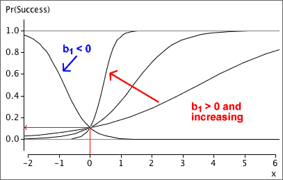
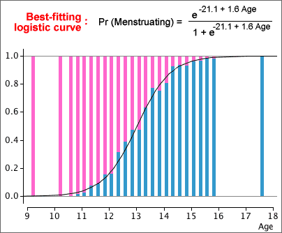
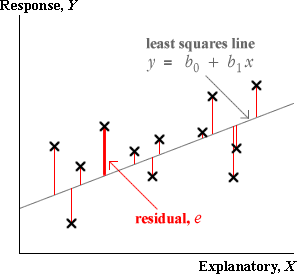
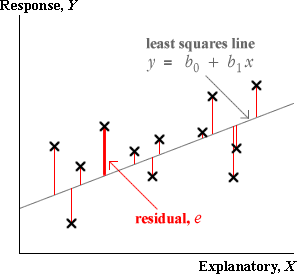

Large residuals pull very strongly on the line since they are squared in
the least squares criterion. As a result,
Outliers will strongly pull the least squares line towards themselves,
making their residuals smaller than you might otherwise expect.
Leverage
If an outlier corresponds to an x-value near its mean, it usually
will have a large residual,

If successive residuals are similar,
d will be close to zero. An approximate p-value can be obtained from
a computer, special statistical tables or with a simulation such as that below.

If the response, Y, is categorical and the explanatory variable,
X, is numerical, we are again interested in comparing the response
distribution at different x-values.
We might use X to define 'groups' by splitting its values
into classes (as might be done to draw a histogram) and this allows us to use
stacked bar charts to describe the relationship.

It is not necessary for the 'classes' to be of equal width. For example, some of the age groups below are of width 3 months, whereas others are 6 months and the extreme classes are wider still.

Unfortunately this may result in predicted proportions greater than 1 or less than 0.

The parameters of the logistic curve
The parameter b1 is called the slope of the curve. Increasing it makes the curve steeper, and
its sign determines whether the curve slopes upwards or downwards.

The parameter b0 is the curve's intercept and it determines the horizontal position of the curve. Increasing it shifts the curve
to the left.

8.2.4 Obtaining a good fit
Estimating the logistic parameters
Estimating the parameters b0 and b1 of a logistic model is more difficult than estimating the parameters for a linear model by least squares, but many statistical programs will do the appropriate calculations for
you.
We therefore take a 'black box' approach and simply show what parameter estimation
gives without further justification.

| 


 Â 
 